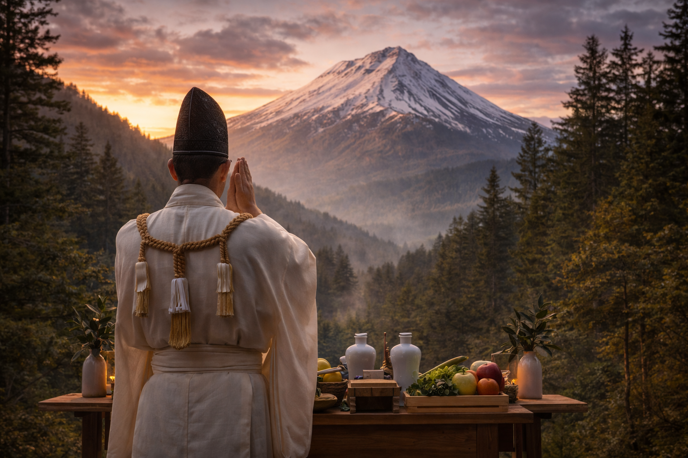
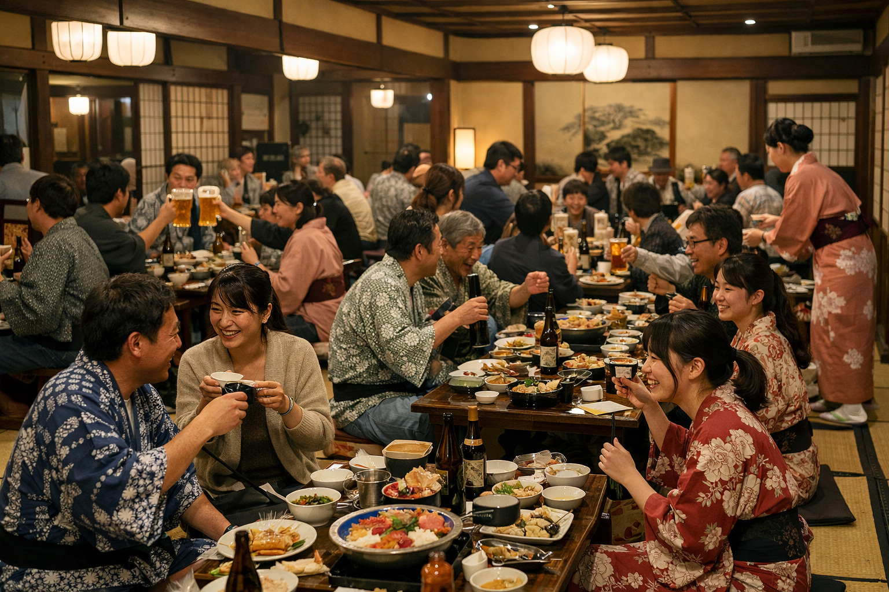
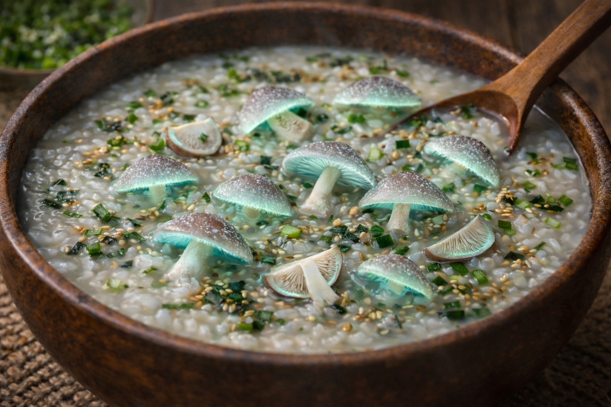

帰依山祭（きえさんさい）

悠久の祈り、山の神事
帰依山祭は、久木村がその始まりの時から守り続けてきた、最も尊い伝統行事です。祭りの朝、清浄な空気の中で執り行われる祈祷は、村を取り囲む豊かな自然への感謝と、久木村をお守りしていただくための誓いでもあります。
この儀式により、村と外の世界、あるいは目に見えぬものとの境界が静かに整えられ、村に深い安寧がもたらされます。

結びつきを深める直会（なおらい）
神事の後は、村人全員が集まり、盛大な宴が開かれます。老いも若きも同じ卓を囲み、酒を酌み交わすこの時間は、村の共同体としての絆を再確認する大切なひとときです。
外からの賓客も温かく迎え入れられ、賑やかな笑い声が村中に響き渡ります。この一体感こそが、久木村の強さの源なのです。
祭りの中心を彩る特別な一杯

帰依山祭において村人が何よりも心待ちにしているのが、この日のために用意される特別な郷土料理クギワラ粥です。特産品である貴重なクギワラタケをふんだんに使い、古くから伝わる秘伝の調理法でじっくりと炊き上げられたこの粥は、一口含めば土地の息吹が体中を駆け巡るような、力強くも滋味深い味わいを持っています。
お祭りの期間中、この粥は村を訪れたすべての観光客の皆様へも無料で振る舞われます。古来より、この特別な食を口にし、その成分を体内に取り入れることこそが土地との繋がりを深める最良の方法とされており、皆様にもその慶びを分かち合っていただきたいと考えております。ぜひ、温かいうちにお召し上がりください。
当日スケジュール
| 10:00 | 奉納神事（お祈り）村の平穏を祈願する、祭りの始まりの儀式です。 |
|---|---|
| 11:00 | 祝詞奏上山の神々へ、感謝の言葉を捧げます。 |
| 12:00 | 直会（なおらい）クギワラ粥の無料配布を開始いたします。 |
| 13:30 | 郷土芸能「久木神楽」古くから伝わる舞を披露します。 |
| 15:30 | 心身の清め（禊）日没に備え、静寂の中で山の音を聞き、心を空にする時間です。 |
| 17:00 | 宵の静寂（よいのしじま）これ以降、観光客の皆様は各宿泊施設にてお静かにお過ごしください。 |